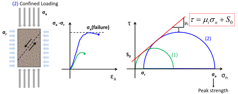

Next: 4.8 Rock damage and Up: 4. Rock Yield and Previous: 4.6 Strength anisotropy Contents
Rocks have a limited range for which they behave elastically, with recoverable strains. After a certain limit, termed yield stress, the rock experiences plastic irrecoverable strains (inelasticity) (Fig. 4.18). Rocks may be still quite strong after reaching the yield stress or even the peak stress if they are able to sustain plastic strains.
Brittleness characterizes strain localization and energy rate release with failure. Brittle rocks fail quickly and in well-defined planes. The stress-strain response usually exhibits a well defined peak stress (red curve in Fig. 4.19). Ductile rocks fail slowly (according to the strain-rate) and distribute strains during failure. The stress-strain response does not exhibits a well defined peak stress and may get even stronger with increasing deformation (blue curve in Fig. 4.19). There are several factors that affect brittleness, such as temperature, specimen size, and mean effective stress. Rocks tend to increase in ductility as mean effective compressive stress increases.
The plot on the left of Fig. 4.20 shows an example of measurement of deviatoric stress as a function of axial strain for various confining (minimum) stresses. The data clearly shows a transition from brittle to ductile in Carrara marble. The post-peak stress-strain behavior can be modeled with plasticity theory. The simplest plastic model considers no increase (or decrease) of stress once the yield stress is reached (perfect plastic behavior). As seen in the experimental data, however, the rock may still be able to support stresses after reaching the yield stress. The rock exhibits “strain-hardening” behavior when it gets stronger with further straining, or “strain-softening” behavior when it gets weaker with further straining. The increments (or reductions) of stress with plastic strain can be modeled through a plastic tensor  such that after the yield stress
 |
(4.7) |
Accounting for plastic strains is required in rocks with small elastic regions, and in large scale and long-term processes such as fault reactivation, evolution of sedimentary basins, and salt diapirism.
![\includegraphics[scale=0.60]{.././Figures/split/5B-11.pdf}](img583.svg)